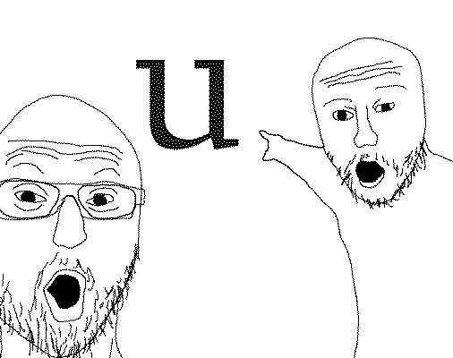

Welcome to my website documenting my journey working on Phoebe, my first ever font. This site doubles as semester documentation for my typeface design class.
^ 1.1 Bézier Bending
We started the class with a drawing exercise; already picking up some small fears of not knowing how or when to add overlaps.

What’s stood out to me the most from our first few readings is this invitation to reconsider associating the way something is made as some sort of inherent indicator of quality: to make sure that, in a broader sense, when I automate my process, that I at least sort of know why I’m doing so—rather than doing it for the sake of it being programmed.
^ 1.2 Pixel Font
For this exercise I instinctually went for a monolinear approach—maybe I could’ve been more ambitious—with a grid that runs small. During this exercise I primarily grappled with legibility: even with a taller x-height, the texture of my pixel font was punctuated by moments of darker color and density with a, e, and s, three glyphs with constructions slightly more complex than the rest of the set. To compensate for this I experimented with small optical adjustments in order to suggest the letterform while evening out color.
With this exercise I didn’t overthink it much. Striving for a simple pixel font with some quirk lingering here and there, I learned to accept and dedicate my attention to creating a cohesive set of letters, rather than imbue every glyph with a lot of personality and risk a disjointed, confused alphabet.

(I was glad to also be able to use my pixel font for some promotional materials for an event!)
the main project
^ 2.1 Research & Brainstorming
During our Special Collections visit I came across this manuscript of Robert E. Browning’s “Saul” by Phoebe Anna Traquair from the late 19th century. After talking about it a bit more with Cassie, a SC curator, I felt a kind of kinship with it as it felt like a form of time travel—the gothic hand recalling medieval manuscripts, yet scattering sans serifs about, resulting in an eclectic and precious take on the manuscript. There was something about the preciousness of the object that spoke to me: lavishing extreme care on decorated capitals and marginal imagery.
Thinking about what a font adapted from this could be applied to, I immediately thought of my personal website, as I’d like to make it with a similar tone of voice: something informed by several sources that’s not afraid of being a little anachronistic, a little eccentric.
After loking a bit more into Phoebe’s work, I found a similar manuscript with more contrast and committed to adapting Traquair’s Saul manuscript, interested in the potential of adapting something handwritten for the web, which is often much sharper and pixel-perfect. I wanted to work on a font that, at its core, was a little contradictory.

^ 2.2 Typeface Proposal

My proposal goes thusly: “a reinterpretation (or adaptation) of Phoebe Anna Traquair’s manuscript of Robert Browning’s ‘Saul’ as a text font for my personal website’s body copy (blog posts), ranging from 13 (15) to 30 (50) pixels.”

Considering Traquair’s biography, I referred to the Book of Kells (this was a work that she grew up inspired by and often returned to), George Bickham’s Universal Penman for its square text hand, and Irish half uncials for their elegant curved forms.
I wanted to keep the manuscript’s tall x-height, as it brings to mind other “handwritten” fonts I would use as a kid when decorating various online spaces. Another feature that I wanted to capture was this lively, gothic spirit embodied in the physicality of the manuscript, as the text feels terse (perhaps due to its compact nature) yet playful.
^ 3.1 Initial Explorations


This stage was nebulous. I soon learned that I gravitated towards the typographic: I preferred graphic forms because there was a degree of sharpness and precision that could then be manipulated to feel more analogue. Doing the reverse for this font adaptation was much more challenging than I expected; throughout early iterations of drafting lowercase base glyphs n, o, p, and v, I struggled with coming to terms with the calligraphic, brush-like look of my glyphs and being at peace with my drawings. While I was indeed interested in exploring a platonic ideal of Phoebe’s calligraphy (as Selina [design compatriot] and Ben [instructor] suggested), in retrospect I might’ve been too harsh on myself and could’ve used some trust in the process. At this stage I was still juggling too many references, trying to make the uppercase some kind of retrofitted uncial.
^ 3.2 A Brief Detour to Wobbleland
Frustrated by the way my base characters weren’t sitting well with me, I took a hard turn down a very different path, interested in the manuscript’s... goopiness (for lack of better or more fitting onomatopoeia). And so I tried to replicate the texture of my source, specifically the way ink pools in certain stressed parts of glyphs.
I soon fled Wobbleland as this direction wasn’t very connected to my source at all.
^ 3.3 Drafting the Lowercase
Upon my return to my formerly calligraphic base characters, I made some changes, introducing sharp, cut-off edges to my base glyphs.
Now I felt much more comfortable. Ben mentioned W.A. Dwiggin’s m-formula and Cyrus Highsmith’s typefaces as a possible reference point. Looking into these two sources was incredibly helpful to me, especially appreciating the balance and tension beween soft and sharp in Highsmith’s Prensa and Quiosco.
Will you look at that!
At this stage I worked on expanding my lowercase set, exploring different ways to convey the gothic in Phoebe’s manuscript in a more contemporary, personal tone. By mid-April I’d expanded to a full set of roughly drafted lowercase glyphs, just in time for our class’s exhibition.

^ 3.4 Uppercase Treatment
The uppercase, unfortunately, came as an afterthought to me. What also added to some of the confusion for caps was the fact that as an illuminated manuscript, Phoebe’s calligraphy provides some (but not all) capitals, and these are either ornamented (see the B below) or more matter of fact (A, E, and L). For the uppercase I alternated between looking towards Irish half uncials and filling in the gaps by loosely interpreting Phoebe’s drop caps.
^ 3.5 Now
After critiques with Nina Stössinger, Lynne Yun, and Cyrus Highsmith, I’m now working on both clarifying the modules that my font will involve, and more detailed glyph treatment, such as descenders/ascenders and spurs.